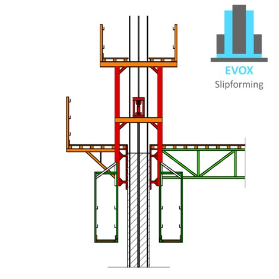
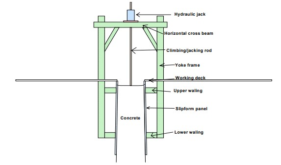
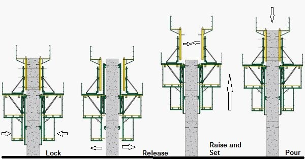
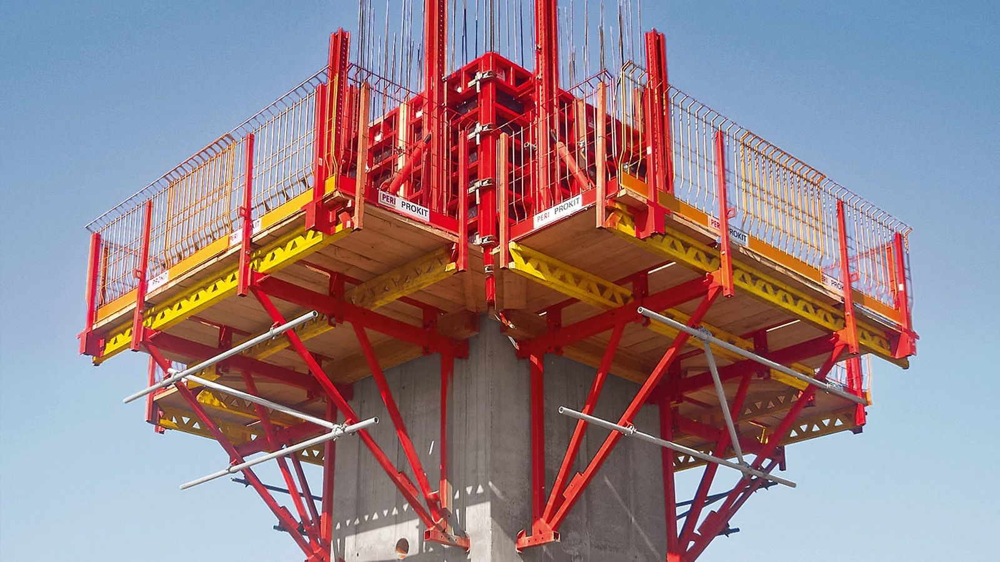
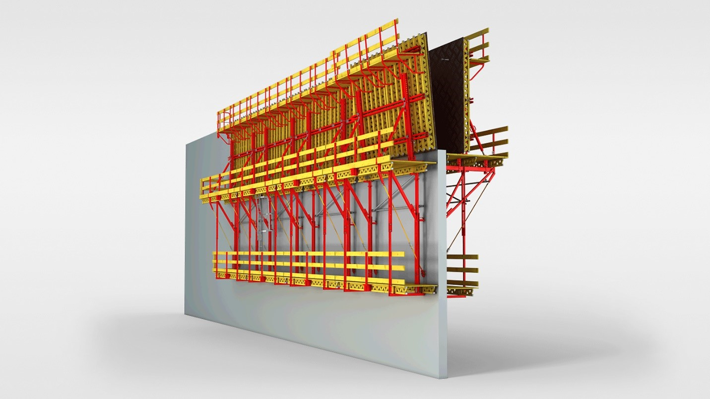

Vertical Slipform and Crane Climbing:
I) Vertical Slipform:
Slipform construction technique is an alternative for conventional formwork system which helps in continuous vertical and horizontal construction. The slipform helps to conduct continuous pouring of the concrete to the moving formwork. The process stops only when the required length of casting is completed.
A) Development of Slipform Construction:
The property of cement and concrete to gain sufficient strength to stay in shape once cast within the initial setting time of 30 minutes lead to the development of slip form construction technique. Engineers took this property to develop a moving formwork system so that the concrete can be poured continuously. The height of the formwork is designed such a way that, during the pouring of the upper level formwork, the concrete poured in the below formwork would have gained initial setting. The concrete exposed when the formwork moves up will remain firm.
B) Components of Slipform:
The slipform system is designed with varied features. Generally, it consists of yoke legs. Yoke legs are employed to lift and sustain the weight of the entire structure, so that it behaves as a single unit. Yoke legs are also used to connect with the beams, scaffoldings and working platforms to serve the supporting purpose.
To the yoke legs, walk-away brackets are connected. These walkway brackets will enable proper placement of the concrete.
C) Work Sequence:
The slipform construction technique is a rapid and an economic construction method compared to the conventional formwork technique. This helps to achieve huge cost saving. The technique is best suitable for large building structures and bridges. When small structures are concerned, the projects with identical geometry can be easily completed by slipform construction.
Continuous movement of formwork in upward direction is performed in slip form technique. The movement is facilitated by hydraulic jacks and jack rods. In the construction of vertical structures, the rate of rising the formwork upwards will be almost in the rate of 300mm per hour. These rise with the help of the supports from other permanent parts of the building.
The whole slipform assembly is lifted by means of strand rods and lifting jacks. These primary components are located at equal intervals so that the uniform and good distribution of weight is performed. In some construction, lifting process are supported by means of hydraulic pump components.
D) Advantages of Slipform Construction Technique:
- Non-stop Method of Construction
- Increase rate of construction
- Increase the productivity
- Provide more working space
- Creates safe work environment for the workers
- Employs less accessory equipment
- Increase flexibility in construction
- Reduced Labor costs
- Scaffolding and temporary works in construction is reduced
- Uniform wall sections and layouts are obtained
E) Disadvantages of Slipform Construction Technique:
- High –cost for initial setup
- Requires Specialized workers and expertise
- Need sophisticated Equipment
- Dimensional Accuracy can go low in certain conditions
- If the Setting out is not correct, it will leave a variation in the core and need to be dismantled at once
And that why we changed our method to use the Crane Climbing Form.
II) Crane Climbing Form:
Crane Climbing (CB) Climbing Formwork is normally used for supporting large-sized, anchored wall formwork. The climbing unit consists of formwork, working platform, brackets with formwork carriage and strong backs as well as finishing platform. It can be moved very quickly by crane.

The climbing formwork structure normally does not only contain the formwork itself, but also usually provides working space / scaffolds for construction crews. It also provides areas for machinery and screens for weather protection, up to being fully enclosed while yet staying modular around a changing building structure.
 A) Instructions:
- Shoring for supporting anchored wall formwork; alternatively, purely as working scaffold
- Type static for formwork heights up to 5.40 m
- Finishing platform with ladder provides access to the wall
- Optional equipment with wind bracing which prevents tipping inwards
- Typical Climbing Formwork being used for the internal RC concrete shear core for the Pender Towers
- Mobile shaft platform resting pocket installed at every floor as part of the mobile scaffold installation procedure
- Working platforms at both low and high level allow for working both around and within the framing structure
- Open and sliding of vertical shutter formwork following the casting of the section
- Sliding mechanism of formwork allows mobility to shift the climbing formwork upwards once the concrete has hardened. Core concreting is to be independent from slab concreting schedule. Ideally core is always two story above working level.
B) Load-Bearing Capacity:
- High load-bearing capacity (50 KN per climbing bracket)
- Formwork height of up to 6.0 m
C) Sequencing:
The formwork around the structure is displaced upwards with the help of one or more cranes once the hardening of the concrete has proceeded far enough. This may entail lifting the whole section, or be achieved segmentally. The latter system is dependable of the use of a tower crane and therefore one would need to keep in mind that time on site will be lost until the formworks is shifted upwards.
- The first wall section is concreted. Install the leading anchor according to specifications
- After reaching the required concrete strength, mount the Scaffold Mounting Ring M24 and then attach the pre-assembled scaffold unit
- Install the formwork and concrete the second section
- Retract the formwork and then mount the Scaffold Mounting Ring M24
- Lift the complete unit to the next section by means of the crane. If required, the finishing platform can be fitted
- Reinforcement work is now carried out and, if required, the formwork is placed at an angle
- Move the formwork forwards and concrete. At this point cycles continue as in Point 3